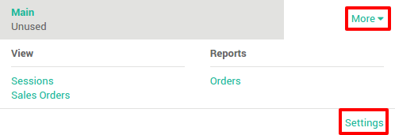
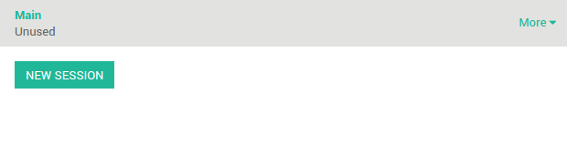

Cash control permits you to check the amount of the cashbox at the opening and closing.
Configuring cash control
On the Point of Sale dashboard, click on .
On this page, scroll and tick the the option Cash Control.

Starting a session
On your point of sale dashboard click on new session:
Before launching the point of sale interface, you get the open control view. Click on set an opening balance to introduce the amount in the cashbox.

Here you can insert the value of the coin or bill, and the amount present in
the cashbox. The system sums up the total, in this example we have
86,85€ in the cashbox. Click on confirm.

You can see that the opening balance has changed and when you click on Open Session you will get the main point of sale interface.
Register a sale

On the right you can see the list of your products with the categories on the top. If you click on a product, it will be added in the cart. You can directly set the correct quantity or weight by typing it on the keyboard.
Payment
Once the order is completed, click on Payment. You can choose the
customer payment method. In this example, the customer owes you 10.84€
and pays with a 20€ note. When it's done, click on Validate.

Your ticket is printed and you are now ready to make your second order.
Closing a session
At the time of closing the session, click on the Close button on the top right. Click again on the Close button to exit the point of sale interface. On this page, you will see a summary of the transactions. At this moment you can take the money out.

For instance you want to take your daily transactions out of your cashbox.

Now you can see that the theoretical closing balance has been updated and it only remains you to count your cashbox to set a closing balance.

You can now validate the closing.